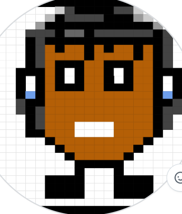

Akash Khelawan
Student at TAEHS
I want to land a job in the future, work hard, and become successful in life. currently, I am learning Python programming and web development. but I am excited to explore more areas in technology. and I am passionate about creating projects that solve real-world problems. i am always eager to learn new skills and take on challenges that help me grow both personally and professionally. right i am working on improving my coding skills and building a strong portfolio to showcase my abilities.
Links

Explore My Portfolio
Featured Projects
Codeskulptor Project
This project helped me practice Python fundamentals. I plan to improve it by adding more features.
Skills: Python
Earsketch Project
I created a song using different sounds inspired by 123 Andrés and Christmas music. I learned how to layer and arrange audio.
Skills: Python